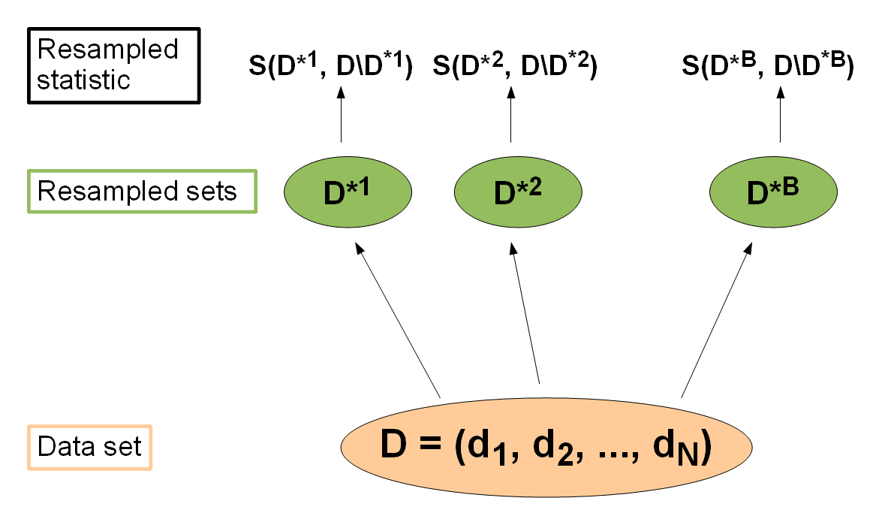

Resampling strategies concern the process of sampling new data sets from your data set D under examination.
One wants to generate various training and test sets, which the learning method can be fitted and validated on.
Here it is assumed that every resampling strategy consists of a couple of iterations, where for each one
there are indices into D, defining the respective training and test sets. These iterations are implemented by
storing the index set in a so called

The packages come with a couple of predefined strategies
Subsampling
In each iteration i the data set D is randomly partitioned into a training and a test set according to a
given percentage (maybe 2/3 training, 1/3 test set). If there is just one iteration, the strategy is commonly
called
# split is the training set percentage rin <- make.res.desc("subsample", iters = 10, split = 2/3)# holdout rin <- make.res.desc("subsample", iters = 1, split = 2/3)
k-fold cross-validation
The data set is partitioned in k subparts of (nearly) equal size. In the i.th step of the k iterations, the i.th subpart is used as a test set, while the remaining parts form the training set.
rin <- make.res.desc("cv", iters = 10)
Bootstrapping
B new data sets D1,..,DB are drawn from D with replacement, each of the same size as D. In the i.th iteration Di forms the training set, while the remaining elements not occuring in the training set form the test set.
rin <- make.res.desc("bs", iters = 10)

For every resampling strategy there is a description class inheriting from resample.desc (which completely characterizes the necessary parameters) and a class inheriting from resample.instance. This latter class takes the description object and takes care of the random drawing of indices. While this seems overly complicated, it is necessary as sometimes one only wants to describe the drawing process, while in other instances one wants to create the concrete index sets. Also, there are convenience methods, to make the construction process as easy as possible. Here is an example for cross-validation:
# create a description for 10-fold cross-validation desc <- new("cv.desc", iters = 10)# create the resample.instance, which defines the train/test indices rin <- new("cv.instance", desc = desc, size = nrow(iris))# get the cv.instance directly rin <- make.res.instance("cv", iters = 10, size = nrow(iris))
Asking the desc or resample.instance object for further information is easy, just use [ ] as the generic getter operator:
# description object # number of iterations desc["iters"][1] 10 # resample.instance object # number of iterations rin["iters"][1] 10 # train/test indices for third iteration rin["train.inds", 3][1] 1 118 45 33 31 13 40 63 75 91 7 70 106 6 67 117 14 123 [19] 24 77 47 109 82 58 93 55 126 69 54 125 42 43 20 19 16 38 ... [127] 12 44 17 94 119 18 144 34 25 rin["test.inds", 3][1] 28 29 56 72 78 79 84 97 99 108 115 120 124 133 139 # train/test indices for first and third iteration rin["train.inds", c(1,3)] rin["test.inds", c(1,3)]$`1` [1] 1 2 5 8 9 12 24 26 50 60 69 91 103 107 134 $`3` [1] 28 29 56 72 78 79 84 97 99 108 115 120 124 133 139
Please refer to the help pages of the specific classes for a complete list of getters.
If you want to validate your classification method, using a certain resampling strategy, simply call resample.fit.
For the example code, we use the standard iris data set and compare with cross-validation a
Decision Tree and the Linear Discriminant Analysis:
# Classification task ct <- make.task(data = iris, target = "Species")# Resample instance for Cross-validation rin <- make.res.instance("cv", ct, iters = 3)# Merge learner, i.e. Decision Tree, classification task ct and resample instance rin f1 <- resample.fit("classif.rpart", ct, rin)# Let's set a couple of hyperparameters for rpart f1 <- resample.fit("classif.rpart", ct, rin, parset = list(minsplit = 10, cp = 0.03))# Second resample.fit for LDA as learner f2 <- resample.fit("classif.lda", ct, rin)# Let's see how well both classifiers did w.r.t mean misclassification error and accuracy performance(f1, measures = list("mmce", "acc"))$measures mmce acc 1 0.04 0.96 2 0.06 0.94 3 0.10 0.90 $aggr mmce acc mean 0.06666667 0.93333333 sd 0.03055050 0.03055050 performance(f2, measures = list("mmce", "acc"))$measures mmce acc 1 0.04 0.96 2 0.00 1.00 3 0.02 0.98 $aggr mmce acc mean 0.02 0.98 sd 0.02 0.02